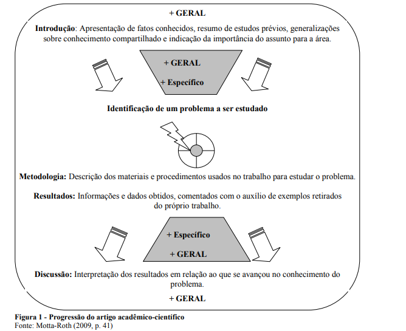
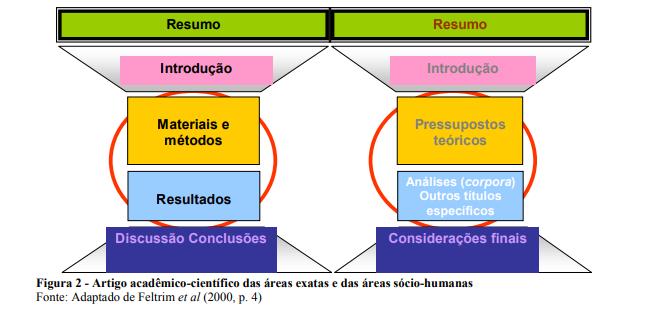

Artigo cientifico
O ARTIGO ACADÊMICO-CIENTÍFICO: COMO ELABORAR?
Juliana Alles de Camargo de Souza
Resumo:
Alunos nos cursos de graduação e pós-graduação demonstram profundas dificuldades para escreverem os artigos solicitados por seus professores. Mesmo alguns professores, em vista desse tipo de problema, mantêm uma certa distância da comunicação da ciência que produzem. Por tais razões, este estudo pretende instrumentalizar, minimamente, um leitor interessado em escrever um artigo acadêmico-científico, mediante uma caracterização simples e breve deste gênero textual. Revisam-se os estudos já concretizados por Motta-Roth (2009), Feltrim et al. (2000) e materiais elaborados pela articulista deste texto em cursos sobre escrita acadêmica. As seções e os procedimentos básicos da escrita do gênero em foco são enumerados e caracterizados brevemente, para resultar num roteiro simples de auxílio à ação de escrever o artigo acadêmico-científico.
Palavras-chave: Gênero textual. Artigo acadêmico-científico
. Roteiro simples.
Abstract: Students in undergraduate and graduate courses show profound difficulties to write
the articles requested by their teachers. Even some teachers, given this type of problem, keep
a distance from the communication of science they produce. For these reasons, this study aims
to minimally instrumentalize a student or professional interested in writing an academic and
scientific article through a simple and brief characterization of this genre. Furthermore, it is
reviewed the studies already implemented by Motta-Roth (2009), Feltrim et al. (2000), and
materials prepared by the writer of this text in courses on academic writing. The sections and
the basics of the writing genre in focus are listed and briefly characterized to result in a simple
roadmap to assist the action of writing an academic and scientific article.
Keywords: Textual genre. Academic and scientific article. Simple roadmap.
INTRODUÇÃO
Este artigo de revisão objetiva mostrar, de forma muito breve, os elementos que caracterizam o gênero textual artigo acadêmico-científico, de modo a constituir um roteiro simplificado para sua construção. Assume-se a noção de enunciado que Marcuschi (2008, p. 21) apresenta, como>unidade concreta e real da atividade comunicativa entre os indivíduos situados em contextos sociais sempre reais. Por conseguinte, postula-se a noção de linguagem como uma atividade social-interativa; a visão de texto como “unidade de sentido ou unidade de interação” (MARCUSCHI, 2008, p. 21) e se adota a noção de compreensão que remete a uma atividade.
Professora das Faculdades Integradas de Taquara (FACCAT); doutoranda em Linguística Aplicada – Universidade do Vale do Rio dos Sinos (UNISINOS); revisora do Núcleo de Revisão de Textos (NRT), UNISINOS; pesquisadora dos projetos DCEROT (Divulgação Científica: Estratégias Retóricas e Organização Textual. E-mail: julianaacs@gmail.com
A de construção de sentido emergente numa relação entre um eu e um tu, bem como a concepção de gênero textual relacionada a uma ação social. Nessa perspectiva, o gênero artigo acadêmico-científico pode definir-se como o texto mais conceituado na divulgação do saber especializado acadêmico e científico. Sua função é ser uma forma de comunicação entre pesquisadores, profissionais, professores e alunos de graduação e pós-graduação. Assim, esses textos assim denominados “são trabalhos técnicocientíficos, escritos por um ou mais autores, com a finalidade de divulgar a síntese analítica de estudos e resultados de pesquisas” (LEIBRUDER, 2000). Sua situação de produção pode ser particularizada como a seguir se anota.
O artigo acadêmico-científico é um texto em que se relata uma pesquisa, um estudo, uma experiência científica (artigo experimental) ou no qual se desenvolve uma discussão teórica (artigo de revisão). Os especialistas, cientistas, acadêmicos ou estudantes são os produtores desse texto com a finalidade de relatar seus estudos, suas pesquisas ou experimentações e/ou discutir estudos teóricos sobre uma dada realidade ou tema. Tal gênero é marcado por atingir, fundamentalmente, um público mais especializado ou os pares. Igualmente, alcança leitores em formação na academia, posto que circula em periódicos científicos das diversas áreas de conhecimento e em sites acadêmicos, nas versões online. Trabalhos relevantes sobre escrita acadêmica em língua inglesa, como o de Swales (1990), preocuparam-se com o exame dos movimentos textuais2 que particularizam o gênero.
Estudos sobre o tema, no Brasil, como o de Motta-Roth (2009) e Feltrim et al. (2000) são importante base deste breve artigo de revisão. Este trabalho, dadas essas pressuposições teóricas iniciais, objetiva esclarecer alguns detalhes sobre a escrita de um artigo acadêmico-científico, explicitando o que se convenciona chamar de movimentos textuais pertinentes ao gênero focalizado. Assim, o texto em curso se compõe de oito seções que explicitam os movimentos (Swales, 1990) ou ações necessárias para que o artigo cumpra sua finalidade de compartilhar as descobertas e as revisões comparativas que as abordagens acadêmico-científicas oportunizam. Justifica-se e fundamenta-se o trabalho empreendido, singularizam-se os movimentos gerais e específicos de Resumo, Introdução, Revisão de Literatura ou Pressupostos Teóricos, Materiais, Métodos ou Metodologia, Resultados e Discussão, Conclusão ou Considerações Finais.
Swales (1990) realizou trabalhos em Sociorretórica, focalizando a esquematização gêneros acadêmicos em Língua Inglesa. No modelo que cria, postula movimentos de texto constituídos por passos. Por exemplo: no Resumo, que é um movimento textual (etapa de construção) do artigo acadêmico-científico, um dos passos anotados é a contextualização ou a apresentação da pesquisa e outro, a exposição de um tópico principal.
3 POR QUE O ARTIGO ACADÊMICO-CIENTÍFICO?
O artigo acadêmico concretiza um impacto numa dada área de conhecimento, quando os estudos que relata ou a discussão que desenvolve são adequados às práticas de pesquisa e de argumentação utilizadas nessa área. Dessa maneira, o produtor do artigo pode descrever o estudo em questão, expor e avaliar seus resultados, concluir e argumentar diante de seus leitores. A fim de que o produtor de um artigo acadêmico-científico atinja seus objetivos (relatar pesquisa, estudos, experimentações e discutir teorias), são fundamentais as seguintes etapas, as quais contribuem para a estruturação do artigo: a) seleção de referências bibliográficas relevantes sobre o tema em questão; b) reflexão sobre estudos já realizados sobre tal tema; c) delimitação de um problema a ser estudado, que ainda revele lacunas (ou novas direções) a serem investigadas na área de conhecimento; d) elaboração de uma abordagem para exame do problema; e) delimitação e análise de um corpus representativo desse universo sobre o qual o estudioso quer se debruçar; f) apresentação e discussão dos resultados obtidos com a análise e/ou as experimentações desse corpus ou recorte experimental; g) conexão com estudos prévios na área de conhecimento em foco, e conclusão que pode levar a generalizações, a partir dos resultados, ou a novos rumos investigativos, em vista das correções e descobertas que os resultados apontarem (MOTTA-ROTH, 2009).Esses passos ou etapas estão representados na figura 1, que se transcreve a seguir:

A Figura 1 mostra, numa progressão que se ampara no geral, uma especificação da abordagem concretizada na Introdução e Metodologia que se amplia novamente, num movimento de retorno aos aspectos generalizantes. Configuram-se, dessa forma, as quatro seções fundamentais do artigo acadêmico-científico: Introdução, Metodologia, Resultados e Discussão. A progressão de uma seção para outra representa “a passagem de uma visão geral da disciplina como um campo de conhecimento, em direção a uma perspectiva mais específica de um problema ainda não resolvido”, de acordo com o que escreve Motta-Roth (2009, p. 40).
Metodologia: Descrição dos materiais e procedimentos usados no trabalho para estudar o problema. + GERAL Introdução: Apresentação de fatos conhecidos, resumo de estudos prévios, generalizações sobre conhecimento compartilhado e indicação da importância do assunto para a área. + GERAL + Específico Identificação de um problema a ser estudado Resultados: Informações e dados obtidos, comentados com o auxílio de exemplos retirados do próprio trabalho. Discussão: Interpretação dos resultados em relação ao que se avançou no conhecimento do problema. + GERAL + Específico + GERAL
O RESUMO DE UM ARTIGO ACADÊMICO-CIENTÍFICO
Como aparece na abertura deste texto, o Resumo objetiva trazer ao leitor uma visão sumarizada do que vai ser desenvolvido no corpo do artigo. Muitos leitores consultam resumos para verificar do que trata o artigo e para, de fato, confirmar se a leitura será válida ou não para o fim que têm em vista. O Resumo acadêmico, por essa razão, deve apresentar, sempre de forma direta (isso inclui a linguagem), o(s) objetivo(s) (dentro de que se pode citar o problema de pesquisa focalizado); a metodologia; os resultados/discussão e/ou as conclusões principais do estudo realizado. Utilizam-se, no final do resumo, palavras-chave, e, dependendo do periódico e das normas que este possuir, deve-se traduzi-lo (e também as palavras-chave) para uma língua estrangeira especificada (a mais utilizada é a língua inglesa). Outro cuidado é observar o número de palavras que o resumo deve respeitar, o que é preconizado pelas normas de um dado evento ou periódico. Por exemplo, na Faculdades Integradas de Taquara (FACCAT), o Resumo não deve ultrapassar 250 palavras. O Resumo é considerado o portão de entrada do artigo acadêmico-científico e, por isso, deve ser elaborado de forma muito enxuta linguística e textualmente, o que o uso da terceira pessoa do singular, com sua impessoalidade, possibilita. Dessa forma, oportuniza-se atingir o fim a que se destina, já que, inúmeras vezes, o resumo de artigos é reproduzido em publicações ou sites que listam apenas esta parte inicial do artigo, a fim de que os leitores, por meio dessas sumarizações, decidam ler ou não o artigo em sua totalidade.
É essencial lembrar-se de que, ao final do Resumo, colocam-se as palavras-chave. Estas sintetizam os pilares sobre os quais o estudo se faz. Aconselha-se que essas palavras sejam escritas em ordem da mais geral para a mais específica.
A INTRODUÇÃO NO ARTIGO ACADÊMICO-CIENTÍFICO
A Introdução de um artigo acadêmico-científico é uma espécie de enquadramento que orienta o leitor na imersão que realiza no texto. Ela contextualiza o leitor na sua jornada de compreensão textual. Mostra, igualmente, o planejamento global que esquematiza e organiza os passos seguintes do texto. É nessa etapa que se relata a construção do problema e tema da pesquisa e é aí que se enumeram os objetivos que o trabalho define, os quais lhe conferem razão de existir.
Sugere-se que a Introdução do artigo focalize os seguintes aspectos: a) generalização sobre o tema abordado (objeto de estudo, ponto de vista); b) indicação da relevância do tema para a área (justificativas); c) identificação de lacunas que existem nos estudos sobre o tema focalizado; d) breve explicação sobre como o artigo pretende preencher essas lacunas (método utilizado); v) explicitação dos objetivos do artigo; e) descrição da estruturação do artigo, quanto às seções que elabora e seu foco principal. Hipóteses de estudo bem como uma alusão rápida e geral de resultados podem ser anotadas com extrema brevidade, estrategicamente. Dadas essas pistas sobre a Introdução, procede-se à sucinta explicação dos outros passos importantes na elaboração do artigo em foco.
REVISÃO DE LITERATURA OU PRESSUPOSTOS TEÓRICOS
A Revisão de Literatura ou os Pressupostos Teóricos constituem o movimento ou etapa do artigo que apresenta as teorias assumidas e postuladas para o exame do corpus representativo selecionado, ou para a discussão sobre uma experiência ou experimentação realizada, com um determinado objetivo já explicitado na Introdução do texto. Os procedimentos de escrita conhecidos como citação (direta e indireta) são comuns nesta etapa, pois, ao apresentar as ideias dos autores, é necessário o uso de verbos dicendi (dizer, apontar, anotar, indicar, contrapor, discutir, enumerar, relatar, entre muitos outros). A citação direta tem uma formatação própria e norma particular de citação (que envolve recuo e mudança de fonte) e seu uso serve para trazer a fala direta (cópia) do autor no corpo do texto em construção. Já a citação indireta relata o que o autor disse e se usa quando o que se apresenta da fala do autor se restringe a três linhas, trecho que deve vir marcado por aspas e com sobrenome de autor(es) indicado(s) entre parênteses logo após as aspas que sempre são solicitadas nesse caso, conforme se verifica nas páginas 1 e 4 deste texto. Para saber detalhes formais, sugere-se consulta ao manual de formatação da FACCAT. Realizou-se esta pressuposição e fundamentação, neste texto, na Introdução e na seção 1, em que se delinearam alguns suportes teóricos para a construção da análise do gênero em foco.
MATERIAIS E MÉTODOS OU METODOLOGIA?
A pergunta que dá título a esta seção tem como propósito esclarecer o fato de que artigos da área das ciências mais exatas têm uma rotina mais fixa de configuração. Assim, o 7uso do título de uma seção “Materiais e Métodos” é bastante comum e de indiscutível necessidade, já que ali se apontam os materiais utilizados em uma pesquisa em Botânica, por exemplo, e os métodos utilizados para a coleta, organização e interpretação de dados coletados. Em áreas mais sociais ou humanas, costuma-se também usar o termo Metodologia como título desta seção ou mesmo uma frase que signifique que esse momento do texto explicita os percursos metodológicos adotados. Essa seção visa descrever os caminhos percorridos de uma experimentação, de um exame de um corpus ou de um estudo sobre uma dada teoria ou, ainda, sobre um conjunto de teorias sobre um determinado tema ou problema, por exemplo.
Muitos métodos são consagrados nas diversas áreas de conhecimento; outros são novos e outros são conjugados diante de uma necessidade de situação de pesquisa. O que se ressalta é que todos precisam ser explicados e esclarecidos na seção do artigo dedicada à metodologia. No caso de uso de materiais específicos para uma investigação de campo, para o exame de um tema, ou de um corpus também se exige enumeração e descrição clara, específica.
A Figura 2, a seguir, pode ilustrar o que se diz acima:

Note-se que esta figura em forma de carretel mostra com clareza a abertura generalizante que o artigo possui em seu início (Resumo que sumariza, Introdução que contextualiza e enquadra), um estreitamento do foco, quando realizada a análise e a Resumo Introdução Materiais e métodos Resultados Discussão Conclusões Resumo Introdução Pressupostos teóricos Análises (corpora) Outros títulos específicos Considerações finais 8
Pressuposição Teórica (especificando-se o estudo em questão) e uma nova ampliação, que ocorre na Discussão/Conclusão ou nas Considerações Finais. O círculo em vermelho marca a diferença que se pode verificar nos artigos de ciências mais exatas como a Física ou Biologia, por exemplo, quando Materiais e Métodos e Resultados são listados ou focados muito especificamente no corpo textual. Já nas ciências de feição social ou humana, a Pressuposição Teórica e a análise de corpus de textos, por exemplo, revelam, por vezes, uma organização que pode usar títulos bem específicos os quais delimitam a(s) metodologia(s) empregada(s) no estudo.
RESULTADOS
As diferenças entre as áreas aqui também influenciam a maneira de organizar este movimento do texto. Em textos de metodologia exclusivamente quantitativa, as tabelas e os gráficos podem aparecer para demonstrar os resultados obtidos estatisticamente, fato comum nas Exatas. Nas áreas mais Humanas ou Sociais, embora o quantitativo e esses procedimentos também apareçam, os resultados podem ser descritos num texto que compara, avalia e que faz uma contabilização mais qualitativa do que estatística ou até uma revisão, tal como se faz neste texto. Por isso, esta seção, às vezes, se mescla às considerações finais ou às conclusões neste último caso.
Neste texto em curso, obtém-se um quadro em palavra e imagens (Figuras que estão listadas sequencialmente, conforme a norma) sobre o que caracteriza o gênero textual artigo acadêmico-científico. Isso implica registro de observações relevantes que um leitor interessado ou com necessidade de escrever um artigo possa utilizar para realizar sua tarefa de comunicar suas descobertas de pesquisa.
CONCLUSÃO OU CONSIDERAÇÕES FINAIS
A Conclusão efetua um movimento inverso ao que se faz na introdução: “enquanto a introdução delimita o tema estudado partindo de um universo até chegar a um nicho, a conclusão amplia novamente o tema do nicho ocupado até chegar ao universo” (FUCHS e SOUZA, 2009). Assim, na conclusão, se realizam: a) a revisão e interpretação dos principais resultados obtidos; b) a demonstração de como os resultados e suas interpretações concordam ou contrastam com pesquisas anteriores, apresentando razões possíveis para os resultados 9obtidos; c) a indicação da relevância dos resultados do estudo para a área em que se insere e até para outras com as quais tenha relação; d) a discussão de implicações teóricas do trabalho e de possíveis aplicações que o trabalho oportuniza; e) as recomendações e sugestões para futuros estudos de ampliação ou aprofundamento de questões discutidas no trabalho, com possível abertura de lacuna a ser preenchida por novas pesquisas. Dessa maneira, este texto cumpre o objetivo a que se propôs, em vista de anotar os movimentos do texto do artigo acadêmico-científico e os procedimentos internos de cada uma das etapas de configuração do gênero.
Sublinha-se que estudos sobre a expressão linguística inerente à escrita do artigo acadêmico-científico, como o uso do discurso citado, da modalização, da paráfrase e da ação de resenhar constituem um trabalho mais longo e de cunho mais específico. Tais procedimentos ficam como sugestão para outros estudos sobre este gênero que acompanha o pesquisador que todos devem ser quando habitam o universo do saber.
Conclui-se com uma citação direta (que ainda não se exemplificou no corpo deste texto), a qual fecha com significativa importância tudo que se anotou: Escrever é parte inerente ao ofício do pesquisador (FEITOSA, 1991). O trabalho do cientista não se esgota nas descobertas que faz. É de sua responsabilidade comunicar os seus resultados, suas descobertas, suas criações. Sendo assim, a escrita científica caracteriza-se como um processo de comunicação muito importante, pois uma descoberta científica torna-se reconhecida através das publicações de seus resultados. (FELTRIM et al., 2000, p. 1).